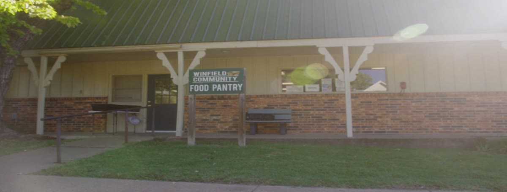
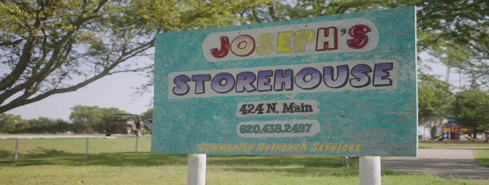
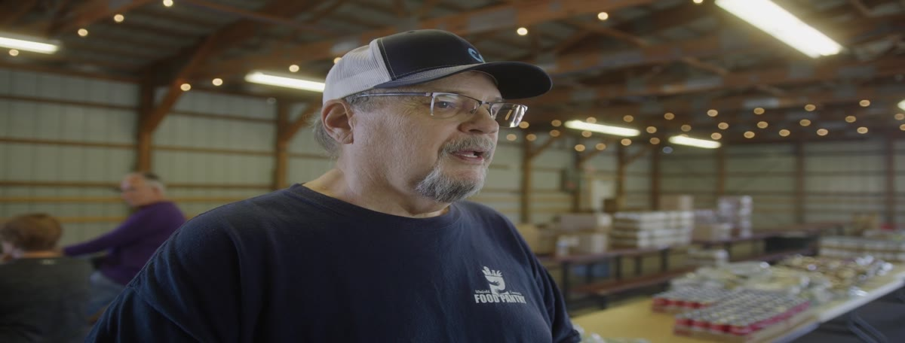
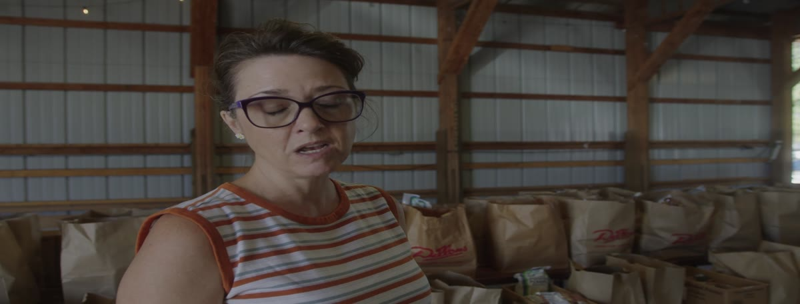
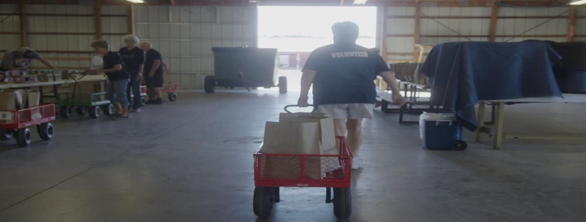

← All work
Hunger Free Kansas: Cowley County
About
How Cowley County, Kansas, feeds its neighbors: food pantry volunteers, a commodities food distribution, K-State Extension, church ministries, and a community garden.
Stills






Contact
brockedwardsvideo@gmail.comTell me about the project, the timeline, and where the video will live. I reply within two business days.